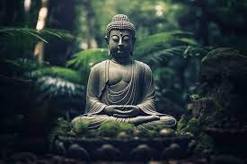

Gautama Buddha (conocido también como Siddhārtha Gautama (o en pali) Siddhattha Gotama; Shakyamuni, (pali: Sakkamuni); y El Buddha) fue un príncipe de Kapilavastu, asceta, meditador, ermitaño y maestro espiritual que vivió durante los siglos VI o V a. C (según algunos expertos, específicamente en el año 563 a. C.). Sobre la base de sus enseñanzas se fundó el budismo, y es venerado por los budistas como un ser plenamente iluminado que enseñó un camino hacia el Nirvana (lit. desaparición o extinción), la liberación de la ignorancia, el apego, el renacimiento y el sufrimiento. Enseñó principalmente en el noroeste del subcontinente indio durante unos cuarenta años. Su enseñanza se basa en una visión del sufrimiento y el fin del sufrimiento (nirvāṇa).
Hay una variedad de diferentes fuentes biográficas sobre la vida de Sidarta Gautama que a veces
entran en conflicto. Son posterior a los textos tempranos. Estas incluyen el Budacarita, el
Lalitavistara sutra, el Majavastu y los relatos jataka.
De los anteriores, el Budacarita es la más temprana y completa biografía. Se trata de un
poema épico escrito por el poeta Asvagosa, que puede ser fechado a principios del siglo ii d. C.40
La siguiente biografía en antigüedad es el Lalitavistara sutra, de las tradiciones majayana y
sarvastivada, fechada en el siglo iii d. C.43 El Majavastu de las escuelas Majasamgika y
Lokotaravada es otra antigua biografía importante, compuesta en forma progresiva hasta
aproximadamente el siglo iv d. C. La biografía de la escuela Darmaguptaka es la más íntegra; su
título es el Abiniskramama Sutra, entre otras varias traducciones chinas entre los siglos III y
VI d. C. Finalmente, los relatos Nidanakata (o Jakata) que son de la tradición teravada de Sri
Lanka, que fueron compuestos en el siglo v d. C. por Budagosa.
El Mahajima Nikaya dice que el Buda tenía más poderes sobrenaturales incluidos ser capaz de caminar
sobre el agua (anima), multiplicarse en un millón y volver a ser uno solo (pratkipa), viajar a
través del continuo del espacio-tiempo (brahmana), hacerse grande como un gigante y pequeño como
hormiga, caminar a través de montañas, nadar dentro de la tierra y viajar a los cielos para instruir
a los devas.